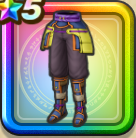

バトルドレス下
攻略班 6.5点 / すばやさ減耐性+10%転び耐性+10%すばやさ減耐性+10%ギラ属性斬撃・体技ダメージ+2%
くわしい特徴
【レベル別習得スキル】 Lv1すばやさ減耐性+10% Lv8さいだいHP+5 Lv10転び耐性+10% Lv15ギラ属性斬撃・体技ダメージ+2% Lv18すばやさ減耐性+10% Lv23さいだいMP+5 Lv25守備力+7 【限界突破スキル】 1凸転び耐性+5% 2凸守備力+5 3凸すばやさ+5 4凸さいだいHP+5

攻略班 6.5点 / すばやさ減耐性+10%転び耐性+10%すばやさ減耐性+10%ギラ属性斬撃・体技ダメージ+2%
【レベル別習得スキル】 Lv1すばやさ減耐性+10% Lv8さいだいHP+5 Lv10転び耐性+10% Lv15ギラ属性斬撃・体技ダメージ+2% Lv18すばやさ減耐性+10% Lv23さいだいMP+5 Lv25守備力+7 【限界突破スキル】 1凸転び耐性+5% 2凸守備力+5 3凸すばやさ+5 4凸さいだいHP+5